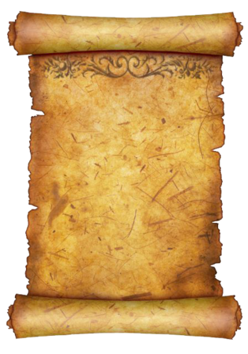

Радомир Смиљанић рођен 14. фебруара 1948. године у Борогову,општина Осмаци, од оца Радомана и мајке Василије.
Радомир своје дјетињство скоро да није ни имао. Остаје без мајке у својој трећој години, а без оца у својој дванаестој години живота.Обоје су умрли у најбољим годинама.
Захваљујући ујаку, тетки(очевој сестри) и стрицу успјева да преброди те тешке дане живота. Већ у седамнаестој години ступа у брак са Милком Грабовица из Зидоња, са којом је остао до краја живота.
У том браку родили су четворо дјеце, два сина и двије ћерке. Својим мукотрпним и поштеним радом отхранили су и школовали своју дјецу без ичије помоћи. Постао је угледни домаћин.
Са својом супругом дјецу су извели на прави пут. Два сина су доктори наука док су ћерке остале са средњом школом као одлични ђаци.
Бог му је подарио пет унука, три унуке и једног праунука. Био је поносан на своју породицу.
У својој 73-ој години живота почињу здравствени проблеми и доктори утврђују да је у питању вирус корона. Борили су се сви да му продуже живот, али у зору 6. новембра 2020. дошао је у сан синовима да се поздрави и да им каже да "мора ићи".
Поздравио се и напустио овоземаљски живот 7.11.2020. пред Митровдан. Сахрањен је у Борогову на сеоском гробљу.
Пошто је Митровдан познат као дан хајдучког растанка, поставља се питање да ли је наш Радомир био "хајдук" свог доба, који је упркос тешком животу и притисцима успио да, својим поштеним радом и трудом сачува своје породично огњиште и остане да живи на својој ђедовини.